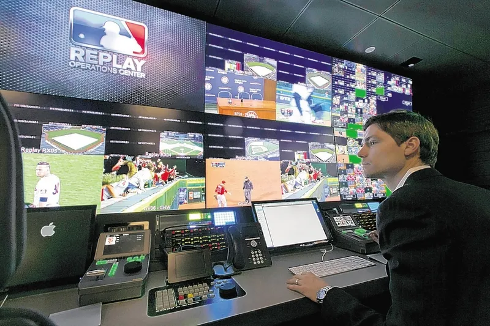
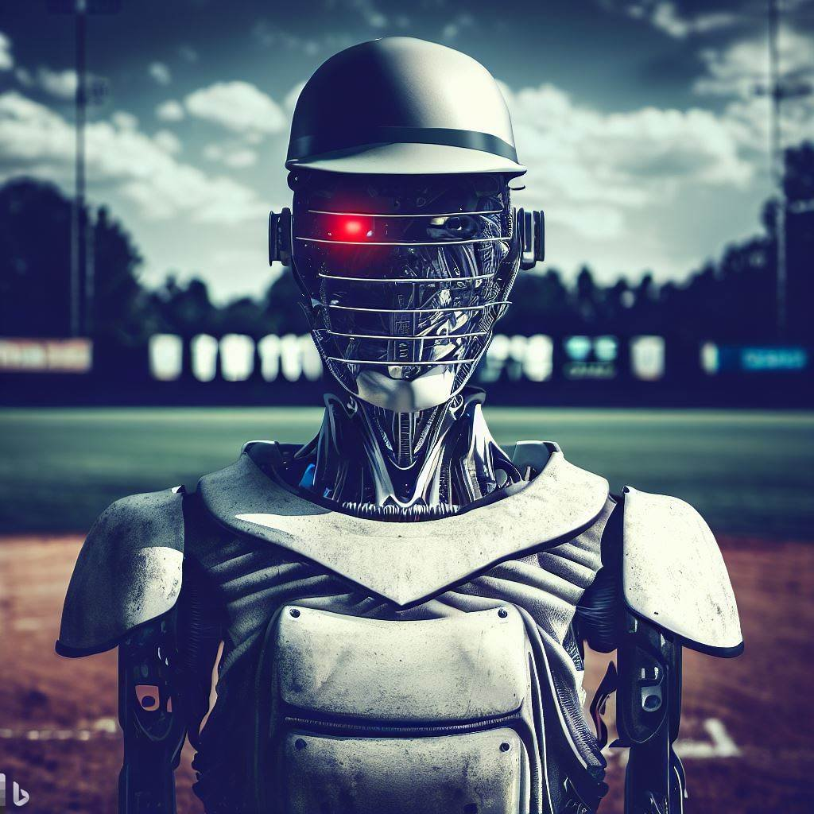

My topic is sports. I choose sports because I am a fan of sports. I am a baseball player. My passion is sports. This is why I choose sports as my topic.
When people think of sports they think of playing, watching, winning, losing and having a good time. But no one thinks of the software or hardware. Maybe because they don’t understand it. Maybe they don't care. But without technology you would have no way to watch your favorite teams, players or your favorite sports. Without technology players would get injured more, bad calls get reversed, and how good or bad your favorite players are doing. Coaches would need technology to know what is the right play in the situation. So maybe when you think about sports you should also think about how technology affects it.
People have made inventions in the past using technology. Some inventions are:
Technology has affceted some parts of sports that did not use technology in the past. For example scouts have scouted their talent based on guts, feelings and instincts. That's how Micheal Jordan signed with Nike to make his shoes. Now, through technology, scouts have a lot of information on how fast an athlete can run, how high they can jump and how hard they can throw and many other stats. Not to mention how techonogy has affected safety for players. Without technology wathletes would continue to get hurt at a constant rate. But their is still room for improvement. I have ideas for 4 new inventions that with technonlgy with can make sports better than what it is now.
I have ideas that could change the way people look at sports forever. Some ideas that I have are as followed.
The Ai umpires and referees is a physical robot that referees your favorite sport. With AI umpires and referees no more time can be wasted with replays because the umpires and referees are 100% accurate. Players like Bryce Harper and Draymond Green can't complain about calls anymore because the calls are not wrong. There will never be a missed call again. The Ball tracking devicee goes inside the ball that the sport is using. With Ball tracking you get to see how far, and fast the ball goes when it is hit, thrown, or kicked. You also get to see the spin rate of the ball too. For example if Alex Wood throws a ball 93 mph to Mookie Betts and Mookie hits it 421 feet at 104.6 mph you will know that with the Ball tracker. The Play Maker will be an app that teams and coaches use to see what the best play for that situation is. Also the Play Maker will try to predicts the other team's play and finds a way to beat it. The Hype-O-Meter is a software that tracks how good or hype a play is based on how close the game was, how loud was the crowd, and how it affects the team win percentage. For example a hail mary touchdown to take the lead will be good for the Hype-O-Meter because it was the good and hype play and it affected the lead of the game. These are some for the ideas that will chage sports forever.
